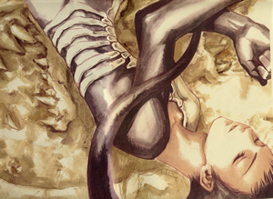
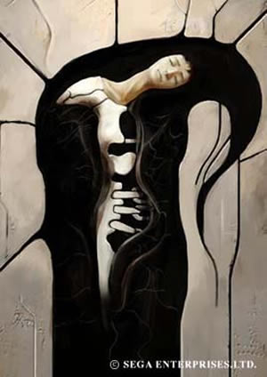
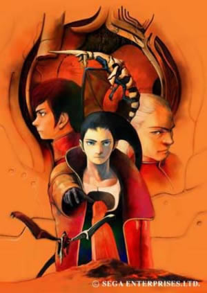

Azel's Awakening Theory
By Jeremy Prusak
 |
Azel: Craymen woke
me from my eternal sleep. That is why I defend him.
From the opening movie of Panzer Dragoon Saga we find that a mysterious girl named Azel was excavated and taken away by none other than the infamous Craymen to be awakened. We get no further information on how or what means Craymen took to do so. Considering that Azel is indeed a drone, could she have some sort of panel or opening which would reveal some sort of activation unit? Azel: My name was inscribed on the bed where I awoke.
One last theory must be discussed. We all know that Azel had a great bond to Atolm, her dragon. When Azel was awakened so was Atolm. But could the rebirth of Lagi at the excavation site have some sort of affect on Atolm’s awakening? Since all other dragons other than Lagi were solely created to protect the Towers. Lagi’s presence would surely be a threat to the Towers as Lagi’s goal would be to destroy them. Atolm sensing Lagi’s awakening would have awoken from his deep sleep, triggering Azel’s awakening as well. All of these theories may have very will been true, but another even more mysterious question needs to be answered. How did Craymen know how to awaken Azel in the first place? The obvious answer would be, Craymen learned his knowledge of ancient technology from the Empire, as they were once Seekers. The Empire has a great deal of knowledge regarding the ancient age, but their knowledge can only go so far, and I don’t think they have an answer to everything. It may be a long stretch but it's not so far off to believe that maybe Craymen himself could be a descendant of the Ancients as the Ancients are believed to have been human. Towards the end of the game within the tower, we find Craymen activating all sorts of ancient age technology such as the circular energy transporters and the many viewing devices which showed all parts of the Panzer Dragoon world. Even Paet would probably have trouble operating such devices. Craymen had some sort of deep secret which was never revealed to the player. Once he activated Azel the procedure was probably kept secret by the empire until Abadd’s awakening. The way in which Azel was awakened is another mystery of the Panzer Dragoon world. So many things we are left to wonder about. Seeking explanations we try to come up with our own theories, only to be left pondering if they are truly correct. Just how are drones awakened from their endless sleep? We may never truly know that answer. |
 Azel asleep in her Ancient Age bed. |
 Azel: "Craymen woke me from my eternal sleep, that is why I defend him." |